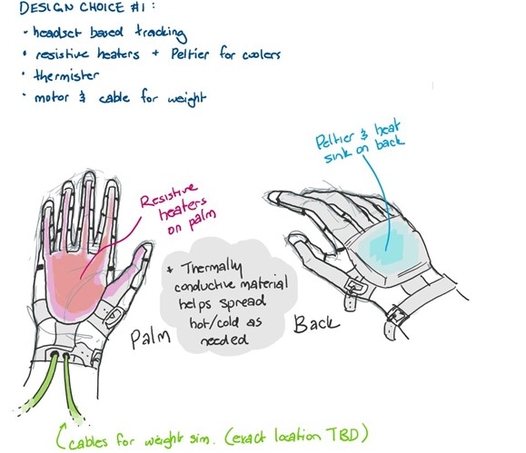

ThermoForce will use resistive heaters located on the inside palm and on each finger for heating, with a thermoelectric cooler located on the back of the palm for cooling. With both heaters and a cooler, the VR glove will be able to provide real time temperature feedback for hot AND cold. The resistive heating pads are flexible PCB’s so full range of motion is retained – meaning people can still physically move their fingers as they grab objects. The thermoelectric cooler is stiff, hence the mounting on the back of the hand, and requires a heatsink to function properly. That being said, in simulation the temperature can be increased 10°C in 2.5 seconds and dropped almost 25°C in the same amount of time.
Since heating and cooling skin at the same time causes the nervous system to become confused, and interpret the temperature change as actual physical pain, care is taken to ensure that only heaters OR coolers can be active at the same time, not both. Finally, thermistors are used to provide temperature data for closed loop control. This type of control allows us to provide accurate and real-time temperature changes as different objects in the game are interacted with.